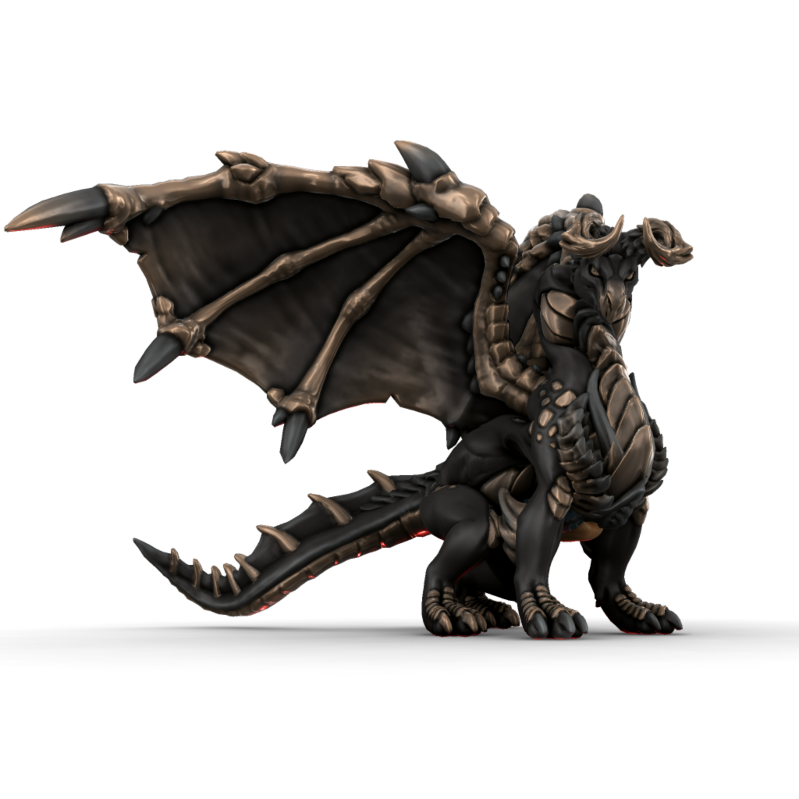

Draconus

Draconus The Great And Terrible was a vast black dragon who lived in what is now Uttmark in the Iotun age. His coupling with Mathixa is how the first Draceans were born. He was eventually killed by the mythic hero Uthgar in the Uthgardt age and his bones now rest in the caves of the Great Wyrm tribe.
🡐 Dragons